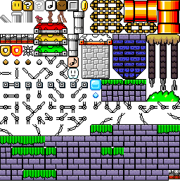
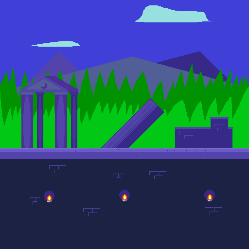
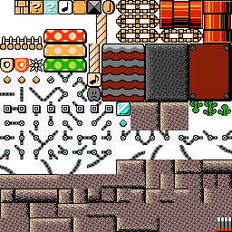
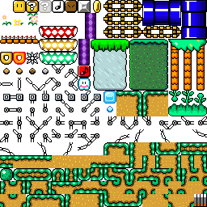
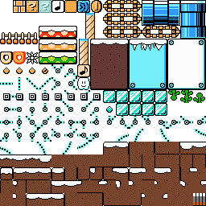
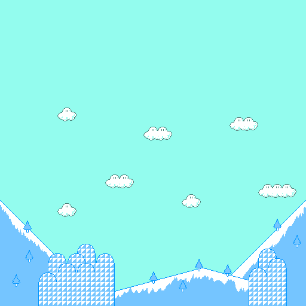

| General information | |
|---|---|
| Name | dynastylobster |
| User ID | 159 |
| Groups | Normal users, Super Mario Maker Hackers |
| Total posts | 30 (0.03 per day) (last post 635 days ago in New Super Mario Bros. Wii/2 in SMM for Wii U and 3DS (Project Releases)) |
| Registered on | 11-02-17, 11:04 pm (1123 days ago) |
| Last view | 07-03-19, 07:31 pm (515 days ago) at: /thread/1813131799-super-mario-maker-1-x-sonic-mania |
| Total stars received | 4 [View...] From:  NightYoshi370 (1), NightYoshi370 (1),  Buntendo (1), Buntendo (1),  WordedPuppet (1), WordedPuppet (1),  MayroSMM (1) MayroSMM (1) |
| Total stars given | 0 |
| Presentation | |
|---|---|
| Theme | Super Mario Bros. Underground · by NightYoshi370 & Buntendo |
| Items per page | 20 posts, 50 threads |
| Layout | bb |
| Language | Board default |
| RPG Status |
|---|
 |
You need to be logged in to post profile comments here.
 falling upwards
falling upwards
hi
|
| would it make sense to port the nsmb DS mod to the 3ds version? that would fit the 16x16 tile size even BETTER :3 |
| Posted on 03-05-19, 09:22 pm in wii u3dsnsmbu New Super Mario Bros. Wii/2 in SMM for Wii U and 3DS |
|---|
Wasn't this already made? it was already made but this is the first time it was imported! :3 |
| Posted on 03-05-19, 08:59 pm in SMW marble zone theme |
|---|
| This is a mod that recreates marble zone from sonic the hedgehog in smw style (imported by willymaker)   download: https://cdn.discordapp.com/attachments/375841969777147916/544610180411818004/Marble_Zone_SMM_MOD.zip |
| Posted on 02-24-19, 01:21 am in SMW marble zone theme |
|---|
Why don't you use your Wii U to take screenshots? (If that's possible, that is. I think it is, cause I've seen people do it before) yeah, i dont have a wiiu, at all |
| Posted on 07-26-18, 10:27 am in slice night theme |
|---|
That looks nice, but screenshots would be great. And I mean that in general. yes screenshots would be great. me having a pc thats actually POWERFULL enough to run cemu would be great. |
| Posted on 07-19-18, 09:06 am in slice night theme |
|---|
but you see, wouldn't it make more sense to use the nes classic palette? the official palette by nintendo |
| Posted on 07-19-18, 08:39 am in SMB NES Color Scheme Mod |
|---|
| this is a theme based off of a game i made called "slice night" it replaces the smw grass theme tileset image:  background image:  Screenshots:     download | | V |
| Posted on 02-25-18, 06:13 pm in slice night theme (rev. 1 by TheNawab on 03-07-18, 06:44 pm) |
|---|
| fire, brimstone, sulphur, all that shizoosle! tileset image:  music ripped from:https://www.youtube.com/watch?v=D8ef-iYfA0E download | | V |
| Posted on 02-24-18, 01:53 am in smb3 volcanic |
|---|
| its just an athletic theme for smw similar to the grey one in new super mario bros U here is the tileset image:  music ripped from here: https://youtu.be/7d5gzY_FQHs the download is down there | | V |
| Posted on 02-24-18, 01:48 am in smw cool mountain |
|---|
| this mod turns your plain old wooden stage into a winter wonderland! the tileset and background:   the music pulled from here: https://youtu.be/Jn2NfXqoB6M download | | V |
| Posted on 02-24-18, 01:39 am in SMB3 snowy |
|---|
this theme modifies the smb3 castle theme in super mario maker to just look better and here is a pointlessmaker screenshot:  the download is down there | | V |
| Posted on 02-18-18, 07:49 pm in super mario bros 3. fancy castle |
|---|
| this honestly has a poor palette choice. sorry if that upsets you |
| Posted on 01-18-18, 06:03 am in smb1 Snow Theme |
|---|
| as for the noteblocks, enemies , and a bunch of other things, i STRONGLY reccomend using valteri's edits like, for example, heres some airship music https://www.youtube.com/watch?v=-qvBbXY8Z-4 and here are his sprites for smb1 https://orig02.deviantart.net/87d6/f/2015/289/2/6/mario_maker_smb1_snes_by_qwertyuiopasd1234567-d9d9ngg.png |
| Posted on 01-17-18, 08:19 pm in wii usmm2 wip Super Mario Bros All-Stars |
|---|
{kind=link}
tileset image: background image:  this mod changes the smw castle theme into scrap brain zone from the first sonic the hedgehog game. i guess you could say, snooPING AS usual. wiiU download:https://drive.google.com/open?id=1bmUTdIEDT7pyjitR1IdA6JsObpUJk_8y |
| Posted on 01-17-18, 07:57 pm in scrap brain zone |
|---|
| this mod changes the smb3 ground theme to a desert Background Image Tileset Image Music Video Screenshots   Wii U Download |
|
Posted on 01-16-18, 02:42 am
in SMB3 Desert theme (rev. 3 by NightYoshi370 on 01-16-18, 03:57 am) |
|---|
{kind=link}
{kind=link}
| looks great |
| Posted on 01-16-18, 02:32 am in wii usmm2 wip Super Mario Bros All-Stars |
|---|
| (btw, slice night is a game i made) anyways, here is the tileset  and here is the background |
| Posted on 12-19-17, 08:22 pm in slice night smw theme |
|---|
Can I port to 3DS? not only CAN you, but i encourage it! |
| Posted on 12-03-17, 05:39 pm in Smb3 snowy |
|---|
| yet another theme i made, imported by buntendo here is the link to the file: https://cdn.discordapp.com/attachments/341653256100904960/386587778357657601/smb3_snowy.zip and here are the preview images   hope u enjoy :D |
| Posted on 12-02-17, 06:43 pm in Smb3 snowy (rev. 1 by dynastylobster on 12-02-17, 06:44 pm) |
|---|
May I recommend using a song that is true to 8-bit (Uses maximum 3 noise channels at a time)? The one you linked is not. Spoilers! This song (aside from the background) is true to 8-bit. https://www.youtube.com/watch?v=tsVJP2wp0XM Plus, you can use this version for the editor, and you wouldn't need to worry about syncing the timing! https://www.youtube.com/watch?v=WscAbeCagUw it, doesnt matter to be honest, i just picked a song that sounded similar to the nes, the actual specifics don't matter, if its a good song that fits well, then i use it |
| Posted on 11-30-17, 07:51 pm in smb1 volcano |
|---|